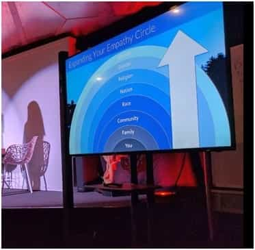
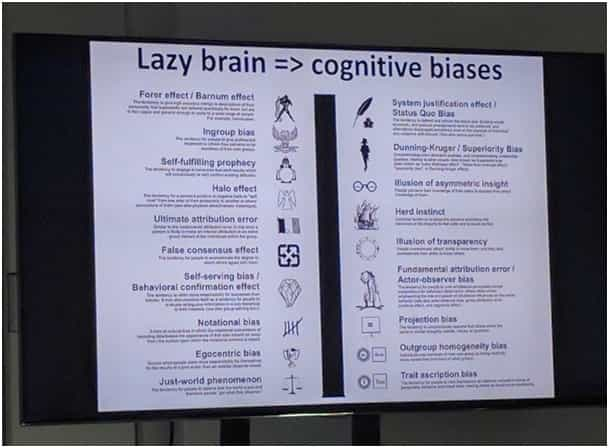

Feminists, inclusionists, and Marxists have flooded the mainstream digital nomad sphere. Since I found remarkable competence among digital nomads, it’s been a personal pain for years to observe liberal influencers rake in mass followings and install a belief system perhaps best described as radical self-denial into the minds of promising talents. The digital nomad lifestyle is one of the few chances still left to the freedom-seeking man to both enjoy life and offer resistance.

Depiction of radical self-denial (Kosmocentrism) at a presentation for impact entrepreneurs in San Francisco
Radical Altruism Produces Incompetence
Most of the powerful digital nomad influencers advocate radical self-denial and constantly attack egocentrism, ethnocentrism, spiritual, gender or generational centrism, and many of the other circles of identity and belonging. With this, they’re almost like the Rotarians or Kalergi Plan promoters.
This highly Marxist view has led many nomads and would-be nomads to sing along with social justice warriors. They crave feel-good people on stage and push true competence, sobriety and down-to-earth strategy planning away from them. Crippling the mind, falling in level, the nomad becomes just like any other libtard. How sad indeed when that happens.
Contaminated with beliefs such as white guilt, colonial shaming, radical tolerance, radical inclusionism, Hollyweird gender roles, political correctness, taxpaying, faith in mass-media, apologetic metrosexual attitude, nonviolence, pacifism, Rainbow Nazi acceptance and all these other hurdles, you’re kept from full masculine expression. The “good” news: you will quickly make friends at mainstream digital nomad or impact sphere gatherings such as the DNX, Hive, Bioneers, Nomad Summit, Nomad Cruise and your remaining host of whatchamacallits.

Well-travelled, broadly educated men are easily falling prey to the blue pill
No Place For Honest Discussions In The DN-Safe Space
If you actually have spent years traveling and came back a battle-proven veteran with all the facts and wisdom, be prepared for disappointment. I personally was viciously attacked by the German SPIEGEL journalist and leftist feminist sex blogger Theresa Lachner after first criticizing German migrant crime and immigration policy. I then received my “death blow” as a DN influencer when she mobilized the community against me since I wouldn’t apologize for sharing how much I disliked being woken up at 6 AM by Muslim prayers promoting religious violence in the South of Thailand in Koh Lanta. This lead to many of my associations being cancelled, with famous DN Tim Chimoy (CitizenCircle) taking the lead.
Another example is when I helped Marcus Meurer, the German DN Kingpin recover his cellphone from an armed attacker in Berlin, risking my life using my own blade. This notably reduced my reach and interactions. At Hive I talked about the deep government’s lethal robotic repression option and again suffered rejection, though low-key.
Mentioning the Israeli Defense Forces’ Samson Protocol or that feminists in power have turned Sweden into a Disneyland for rapists in less than a decade and practices comprehensive censoring to cover it all up is a sure-fire way to hurt yourself socially. Try it and watch as your following becomes disengaged, if not turn against you.
These developments are easily proven facts, but even DN-people you hung out with for some time will cut you off immediately if you discuss them. Luckily that’s when you tend to find those actual red pill bros. Here are some more off-limit topics that show the digital nomad mainstream is blue pill, just so you understand where I’m coming from…
- All topics in reference to the existence of the deep government, even after all we know today of the NSA etc.
- Topics having to do with war are often considered inappropriate, because “bad energy”
- Tax justice and many topics concerned with justice, if it’s not for Marxist understanding of equality
- Game, faults of feminism / female judgment and masculinism
- Cultural, Zionist, LGBT and religious criticism (except to bash Christianity), mass media and blue pill system criticism
- Super taboo criticizing refugee policy or refugee crime
- Civil resistance, armed resistance against criminals, any action that is not complete surrender
Note how these are quite important, even interesting topics. I could go on and on. The mainstream digital nomad movement is under constant siege of influencers trying to make it more effeminate, toothless and confused. Anyone who speaks up is brutally sanctioned if they were of any influence. If they were of no influence, they will be henceforth ignored.
“So what?” you might ask. The digital nomad sphere is large enough and there are enough red pilled tribes out there you can choose to make your home at. In my opinion this argument is flawed. I’d put the current sufficiently red-pilled rate at 12-15% max and there is another huge problem, and that’s talent waste.

Displays of skill in arts and music at Cosmic Conversion Electro Festival, fully identified with radical inclusionism. The event promotes price discrimination to disadvantage Americans and Europeans and is backed by the highly influential NuMundo Impact Entrepreneurship Network, which in turn is close to the Burning Man scene which again is richly dotted with individuals who’d do well in our ranks were they not 100% brainwashed
Digital Nomadism Is A Highly Effective Yet Peaceful Weapon Against Consumerist Enslavement
The actual champion red pill nomad is still part of a tiny minority. Many get caught up in the ideological traps of peace-love-and-unity blue pill influencers. It’s a damn shame when the appropriate initial drive should become confused and pussified.
Well-educated, maybe even already half-pilled young white people end up as roadkill, tricked into thinking for example that South Africa is a giant party and it’s cool to walk home three blocks. Crap cultures fail and it sucks to live there, and belief bubbles and safe spaces don’t do well against blades and bullets. I’ve tried it, trying to talk assailants out of robbing me. It really goes so much smoother if you’re packing. But show me the influential nomad influencer who recommends packing a weapon! I’ll believe you when I see it.
For pictures such as these you’d already start getting heat. Shooting as a hobby, or carry-rights even if one has shown one has enough mental Zen to wield such arms? Pretty much off-limits to the “respectable” nomad, or so the mainstream will agree
We Can’t Be Happy With These Losses And Humiliations
Red pill nomads have the choice to either hold still and do business with traitors and sheep or to speak up and suffer sanctions and banishment. I say let the principles of higher design flow forth to speak for the richness of our capacity. Through relentless, masculine strive, we are a growing force to be reckoned with.
Always remember: We are the essence. Libtard ideology is but a sorry, empty story for feeble-minded losers. If we stay true to what we know is right even under fiercest onslaught, we will yet bend, sink and break the boat of worms and rebuild the desecrated temples of reason and logic.
From one, many.
From many, change.
From change, hope.
From hope, victory.
Hopefully we can end the corrosive blue pill stranglehold on the nomad and impact sphere.
Read Next: The Pitfalls Of Being A Digital Nomad